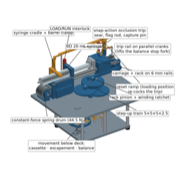
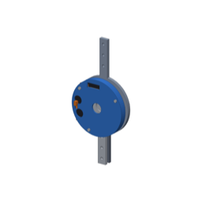

Sean Lee
Computational Biology & Translational Oncology
Hi, I'm Sean. I'm the founder of Third Author and Onco Research Scholars, co-founder and CTO of Sutura Genomics, co-founder and CFO of ThroughWay, and a research intern at MD Anderson. I was previously a researcher at Baylor College of Medicine.
I'm also working on DRAIN, electrochemical engineering applied to neural interfaces, with Dr. Mim Rahimi at the University of Houston and Dr. Oleh Pochynyuk at UTHealth Houston.
Updates
- Mar 2027 Presenting at the Cholangiocarcinoma Foundation Annual Conference in Utah.
- Dec 2026 ePoster at the ESMO Asia Congress in Singapore.
- Oct 2026 Working on DRAIN with Dr. Mim Rahimi (University of Houston) and Dr. Oleh Pochynyuk (UTHealth Houston).
- Oct 2026 Founded Third Author, interviewing professors.
- Oct 2026 Designed ChronoFlow, LATCH Knee, and FlexTome (projects).
- Sep 2026 Poster accepted at the NeurIPS 2026 LP4FM workshop.
- Jul 2026 Working with a team of interns on PhysioCheck, a biomedical AI-safety benchmark.
- Jul 2026 Posted a spatial-transcriptomics preprint on bioRxiv.
- Jul 2026 Preregistered a napabucasin Phase 3 meta-analysis on OSF.
- Jun 2026 Accepted to Y Combinator Startup School (ticket).
- Jun 2026 First-author pSTAT3 abstract published in The Oncologist.
- Jun 2026 Volunteered at Texas Children's Hospital (video).
- May 2026 Presented at the Cholangiocarcinoma Foundation Annual Conference as its youngest presenter.
- Apr 2026 Co-founded Sutura Genomics as CTO.
- Apr 2026 Co-founded ThroughWay, a cancer financial-toxicity nonprofit, as CFO.
- Mar 2026 Built the Research Brain, an AI research system (graph).
- Jan 2026 Founded Onco Research Scholars.
- Jul 2025 Attended the DAVANCO oncology symposium in Bermuda.
Research
-
Resource Inversion: Cross-Lingual Fidelity and Verified Deferral for Oncology Patient Communication in Low-Resource Languages
-
 A 6-Gene pSTAT3 Transcriptomic Score Identifies an Immunosuppressive, Chemotherapy-Resistant Phenotype and Predicts Poor Survival in Biliary Tract CancerDevelops and validates a six-gene pSTAT3 transcriptomic score in biliary-tract cancer, linking high pathway activity to shorter survival, an immunosuppressive tumor microenvironment, and chemotherapy resistance.
A 6-Gene pSTAT3 Transcriptomic Score Identifies an Immunosuppressive, Chemotherapy-Resistant Phenotype and Predicts Poor Survival in Biliary Tract CancerDevelops and validates a six-gene pSTAT3 transcriptomic score in biliary-tract cancer, linking high pathway activity to shorter survival, an immunosuppressive tumor microenvironment, and chemotherapy resistance. -
Tissue tearing degrades optimal-transport registration of spatial transcriptomics beyond displacement magnitude: a multiseed deformation benchmark and a supervised graph cross-attention proof-of-conceptBuilds a controlled human-DLPFC benchmark showing that tissue tears break optimal-transport, diffeomorphic, and Gaussian-process registration methods; tests a graph cross-attention model and diagnoses donor shift as its main generalization failure.
-
 Napabucasin Across Four Registrational Phase 3 Trials in Advanced Gastrointestinal Cancers: A Complete-Enumeration Meta-Analysis Bounding the Survival Effect, and a Tested Non-Replication of the pSTAT3 Biomarker SignalPools all four registrational phase 3 trials of napabucasin, covering 3,383 patients, to bound any clinically meaningful survival benefit and test whether the reported pSTAT3-positive biomarker signal replicates.
Napabucasin Across Four Registrational Phase 3 Trials in Advanced Gastrointestinal Cancers: A Complete-Enumeration Meta-Analysis Bounding the Survival Effect, and a Tested Non-Replication of the pSTAT3 Biomarker SignalPools all four registrational phase 3 trials of napabucasin, covering 3,383 patients, to bound any clinically meaningful survival benefit and test whether the reported pSTAT3-positive biomarker signal replicates. -
A pan-cancer identifiability atlas for compartment-resolved pathway attribution from bulk transcriptomesIntroduces a calibrated four-part identifiability gate for asking whether bulk RNA can recover malignant-versus-stromal pathway differences; across 5,576 TCGA tumors, only 6.9% of pathway-cohort attributions pass.
-
 Competing risks are ignored in most SEER cancer-specific-mortality nomograms: a systematic audit with real-patient reanalysis and a validated correction pipelineAudits 1,000 SEER nomogram papers and finds that 82.8% show no evidence of competing-risk handling; validates how naive survival methods overestimate cancer-specific mortality and releases a reproducible correction pipeline.
Competing risks are ignored in most SEER cancer-specific-mortality nomograms: a systematic audit with real-patient reanalysis and a validated correction pipelineAudits 1,000 SEER nomogram papers and finds that 82.8% show no evidence of competing-risk handling; validates how naive survival methods overestimate cancer-specific mortality and releases a reproducible correction pipeline. -
 Most published immunotherapy-response gene signatures do not outperform random gene sets, and collapse onto a single tumor-inflammation axisBenchmarks 102 published immune-checkpoint response signatures across 15 cohorts against size-matched random gene sets, finding that most collapse onto one tumor-inflammation axis with a held-out predictive ceiling near AUROC 0.59.
Most published immunotherapy-response gene signatures do not outperform random gene sets, and collapse onto a single tumor-inflammation axisBenchmarks 102 published immune-checkpoint response signatures across 15 cohorts against size-matched random gene sets, finding that most collapse onto one tumor-inflammation axis with a held-out predictive ceiling near AUROC 0.59. -
Tumor Phospho-STAT3 Marks a Shared Angiogenic-Fibrotic, Immune-Replete Microenvironment Across Gastrointestinal Cancers: A Multi-Omic Analysis of 1,274 TumorsUses genomic, transcriptomic, and spatial data from 1,274 tumors across gastrointestinal cancers to test whether pSTAT3 marks a shared angiogenic-fibrotic, immune-replete microenvironment linked to patient survival.
-
When can a pathway program be attributed to a tumour compartment from bulk RNA? An identifiability audit across immune-checkpoint cohortsAudits whether malignant and stromal STAT3 activity can be separated from bulk RNA-seq in six immune-checkpoint cohorts; only two pass the identifiability gate, and compartment resolution adds no predictive value beyond the bulk signal.
Projects
-

ChronoFlowAn electricity-free, clockwork-governed syringe driver for neonatal care in low-resource settings. It meters volume rather than pressure, with a predicted accuracy of about ±1.2% against a ±5% requirement and a parts cost near $40. -

LATCH KneeA stance-control knee joint for knee-ankle-foot orthoses that reads the loads it already carries, with no pendulum, cable, or battery, and locks at any angle. Simulated on 9,781 measured strides from 51 subjects, it locked at heel strike in 99.2% of strides at speeds up to 1.5 m/s. -
FlexTomeA 3D-printed rocking microtome with a backlash-free flexure pivot and a differential-screw feed built from standard M8 threads. It targets 5 µm paraffin histology sections, with a predicted 5.01 ± 0.72 µm and a parts cost of about $62.
Experience
-
Third Author · FounderImpact and change the world with one local professional at a time. A free, student-led organization with a few chapters around the world, connecting teens ages 13 to 18 with local professionals who suggest small community projects, funded by sponsors and donations. We interview professors and professionals at places like NASA Johnson Space Center, the University of Arizona, and Texas A&M AgriLife about the problems in their fields and how teens can start helping.Oct 2026 - present
-
Sutura Genomics · Co-Founder & CTOAI platform for spatial-biology tissue reconstruction · 5-figure revenue · YC Startup School 2026Apr 2026 - present
-
Onco Research Scholars · Founder & PresidentInternational student research incubator · 120+ membersJan 2026 - present
-
ThroughWay · Co-Founder & CFONonprofit reducing financial toxicity for cancer patients; working with the MD Anderson Financial Clearance Center's executive directorApr 2026 - present
-
UT MD Anderson Cancer Center · Research InternComputational cancer genomics · GI Medical OncologyJan 2024 - present
-
Cholangiocarcinoma Foundation · ResearcherStatistical & survival modeling · Salt Lake City, Utah · RemoteJan 2026 - present
-
European Society for Medical Oncology (ESMO) · ResearcherSingapore · RemoteApr 2026 - present
-
Massachusetts Institute of Technology · ResearcherResearch internshipJan - Jun 2026
-
Baylor College of Medicine · ResearcherResearch internshipJan - Jun 2026